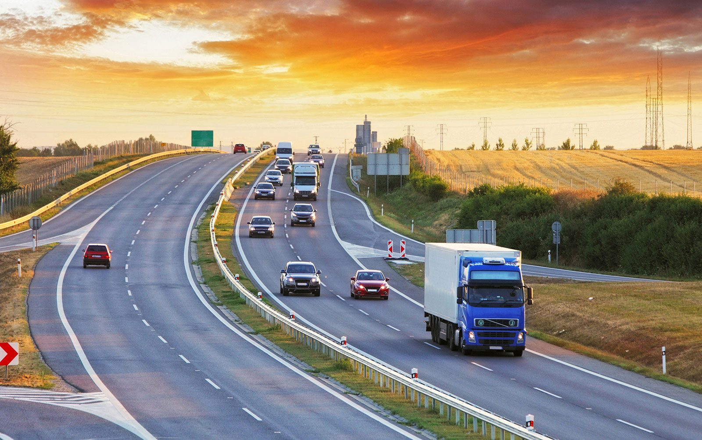
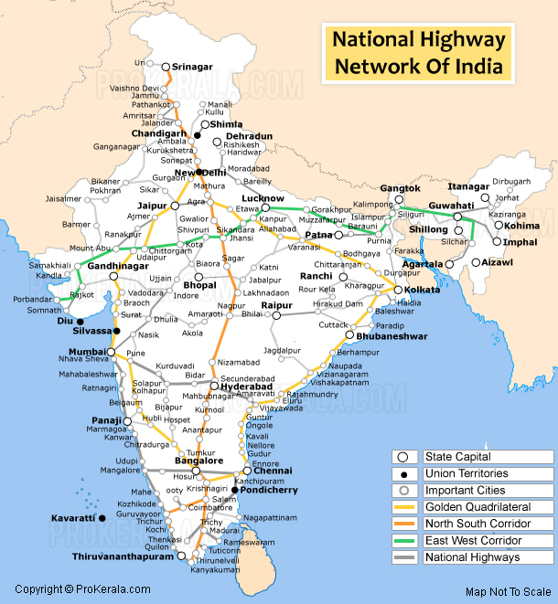
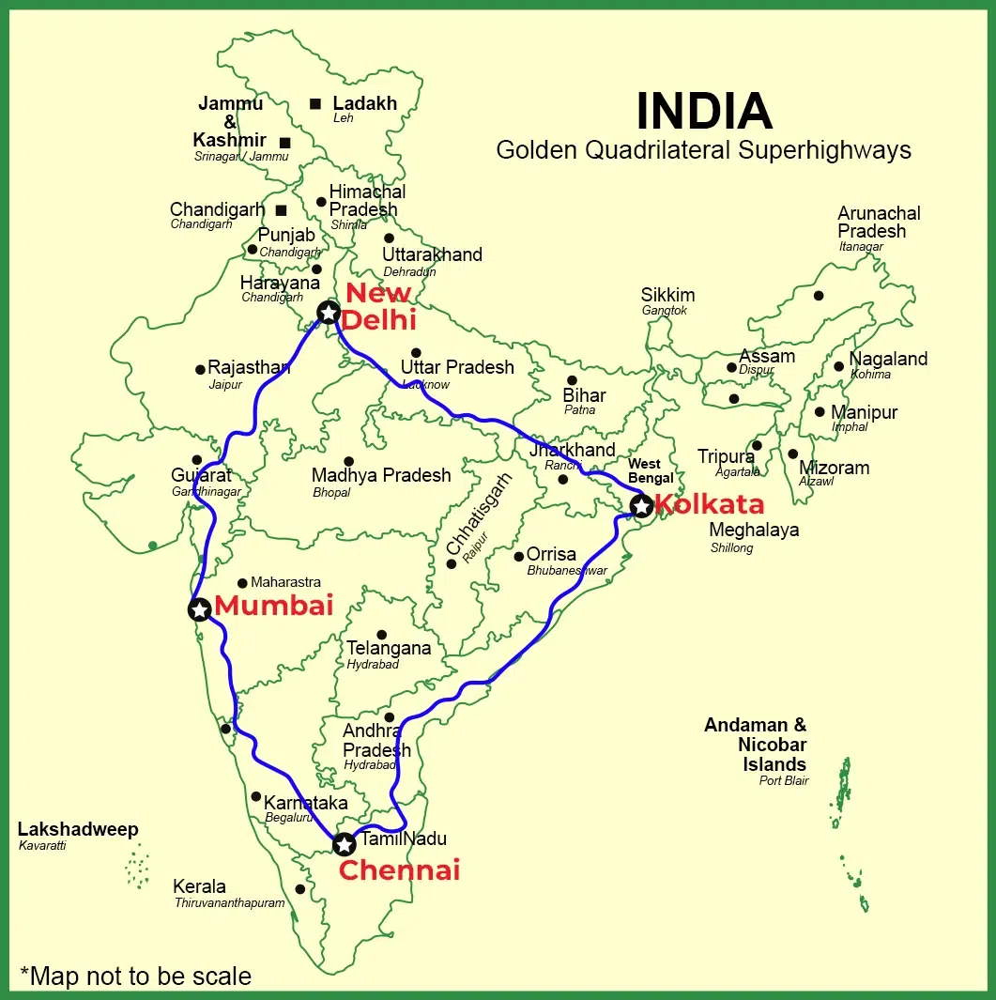
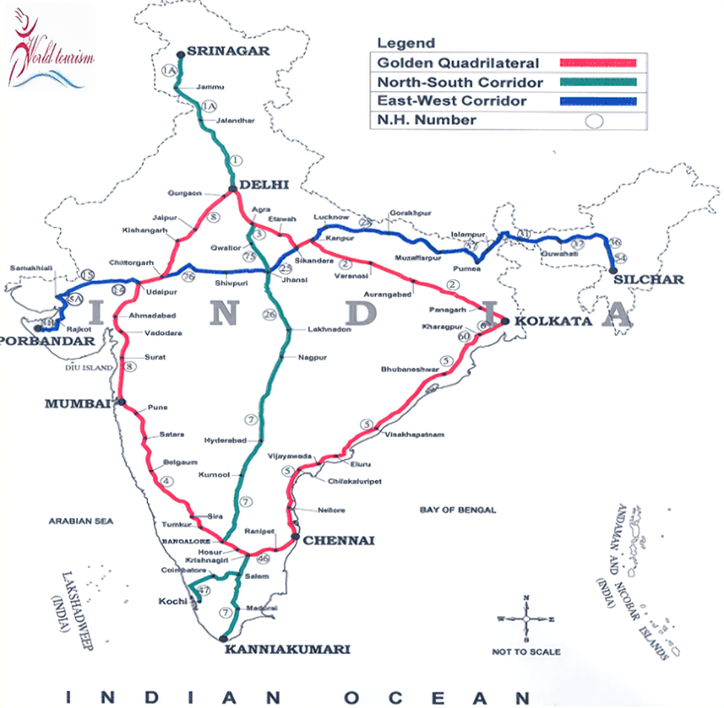

15 Transport Roadways
Transport - Roadways

TRANSPORT
Transport is a service or facility for the carriage of persons and goods from one place to another using humans, animals and different kinds of vehicles. Such movements take place over land, water and air. Roads and railways form part of land transport; while shipping waterways and airways are the other two modes. Pipelines carry materials like petroleum, natural gas, and ores in liquid form. Moreover, transportation is an organised service industry created to satisfy the basic needs of society. It includes transport arteries, vehicles to carry people and goods, and the organisation to maintain arteries, and to handle loading, unloading and delivery. Every nation has developed various kinds of transportation for defence purposes. Assured and speedy transportation, along with efficient communication, promotes cooperation and unity among scattered peoples.
Road transport
Road transport is the most economical for short distances compared to railways. Freight transport by road is gaining importance because it offers door-to-door service. But unmetalled roads, though simple in construction, are not effective and serviceable for all seasons. During the rainy season, these become unmotorable and even the metalled ones are seriously handicapped during heavy rains and floods. In such conditions, the high embankment of rail tracks and the efficient maintenance of railway transport service is an effective solution. But the rail kilometrage being small cannot serve the needs of vast and developing countries at a low cost. Roads, therefore, play a vital role in a nation’s trade and commerce and in promoting tourism. The quality of the roads varies greatly between developed and developing countries because road construction and maintenance require heavy expenditure. In developed countries, good quality roads are universal and provide long-distance links in the form of motorways, autobahns (Germany), and interstate highways for speedy movement. Lorries, of increasing size and power to carry heavy loads, are common. Unfortunately, the world’s road system is not well developed. The world’s total motorable road length is only about 15 million km, of which North America accounts for 33 per cent. The highest road density and the highest number of vehicles are registered in this continent compared to Western Europe.
Importance of Road Transport in India
High Accessibility: Roads offer door-to-door service and connect even remote rural areas, making them crucial for last-mile connectivity. Flexible Service: Compared to railways, road transport offers more flexible schedules and shorter routes, allowing for more dynamic travel and transport. Employment:
The sector provides jobs through vehicle operations, maintenance, construction, and allied services. Growth in Freight and Passenger Mobility: Roads handle a significant portion of India's total freight and passenger movement, vital to the economy.
Classification of Roads in India
National Highways (NH):
Managed by the National Highways Authority of India (NHAI). Aim to connect major cities and important centres across states. Over 140,000 km of National Highways (as of recent data), make up only about 2% of total road length but handle 40% of total road traffic. Examples: NH 44 (formerly NH 7), running from Srinagar to Kanyakumari (India's longest NH).

State Highways (SH):
Managed by respective state governments. Connect major cities, towns, and district headquarters within a state. Acts as a bridge between district roads and National Highways.
District Roads:
Connect district headquarters to other areas within the district. Classified into Major District Roads (MDR) and Other District Roads (ODR).
Village Roads:
Connect villages to nearby towns or district roads. The key focus area for rural development, especially under programs like the Pradhan Mantri Gram Sadak Yojana (PMGSY).
Border Roads:
Built and maintained by the Border Roads Organisation (BRO). Essential for strategic military and border area development. Example: Roads in the Northeast, Jammu & Kashmir, and Ladakh regions.
Major Government Initiatives and Programs
Bharatmala Pariyojana
Launched to develop and upgrade 35,000 km of highways in phases. Aims to boost national corridor efficiency, connect economically important regions, and enhance international connectivity. Covers projects like economic corridors, inter-corridors, feeder routes, and border road improvements.
Pradhan Mantri Gram Sadak Yojana (PMGSY)
Focuses on rural connectivity, aiming to connect all eligible unconnected habitations with roads. Essential for socioeconomic development in rural areas, reducing travel time and boosting access to markets, education, and healthcare.
National Highways Development Project (NHDP)
The flagship project aimed at upgrading and expanding National Highways. Encompasses Golden Quadrilateral, North-South and East-West Corridors, port
connectivity, and more. Currently integrated under the Bharatmala Pariyojana.
Setu Bharatam Project
Aims to make all National Highways free of railway-level crossings by constructing overbridges or underbridges. Focus on reducing accidents and improving traffic flow.
Green Highways Policy (2015)
Encourages tree plantation along highways, aiming for 1% of project cost to be spent on green cover. Focus on sustainability and reducing the environmental impact of highway projects.
Key National Highways and Corridors
Golden Quadrilateral (GQ):
Links Delhi, Mumbai, Chennai, and Kolkata through a quadrilateral network. Covers around 5,846 km, enhancing connectivity between these major metros and surrounding regions. Improves freight and passenger movement efficiency across North, West, South, and East zones.

North-South and East-West Corridors:
North-South Corridor: Srinagar to Kanyakumari. East-West Corridor: Porbandar in Gujarat to Silchar in Assam. The total length of around 7,300 km, connecting the extremities of India.

North-South Corridor: Srinagar to Kanyakumari. East-West Corridor: Porbandar in Gujarat to Silchar in Assam. The total length of around 7,300 km, connecting the extremities of India.
Char Dham Highway Project:
Aims to improve connectivity to Badrinath, Kedarnath, Gangotri, and Yamunotri in Uttarakhand. Primarily focuses on pilgrims and tourism, enhancing safety and reducing travel time.
Road Safety and Maintenance Initiatives
NHAI Incident Management System: For quick response to road accidents, includes ambulances, cranes, and patrol vehicles. Electronic Toll Collection (FASTag): Reduces congestion at toll booths and ensures seamless toll payment. Road Safety Week and Awareness Programs: Annual campaigns and programs for educating the public on road safety measures.